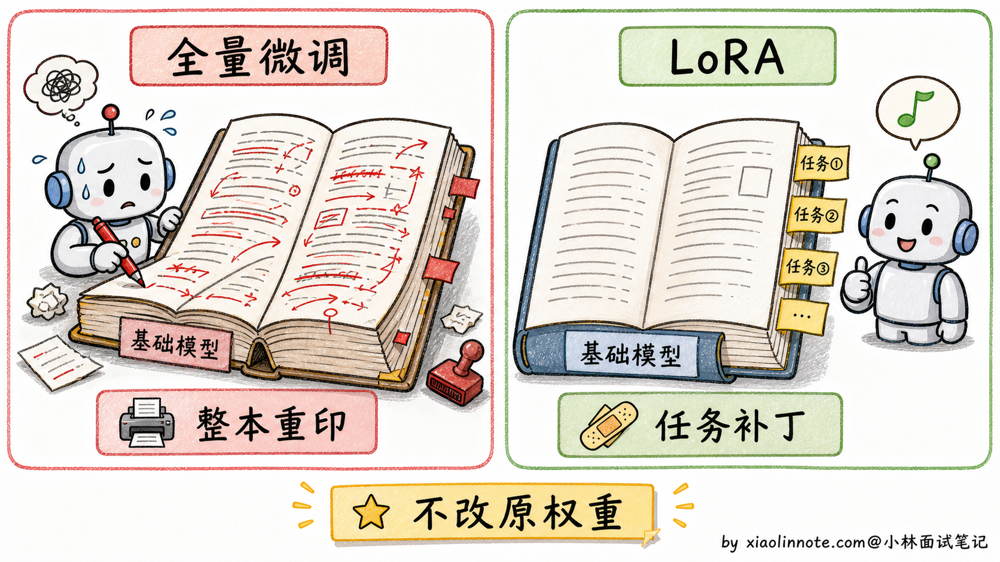
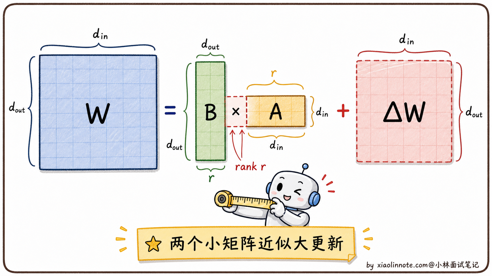
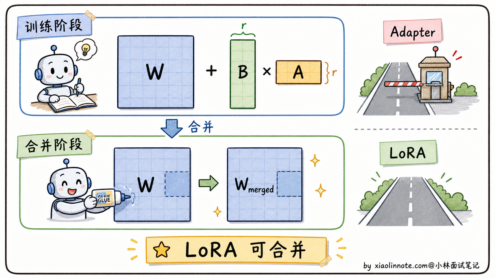
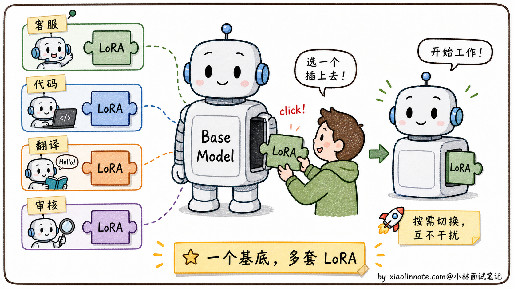
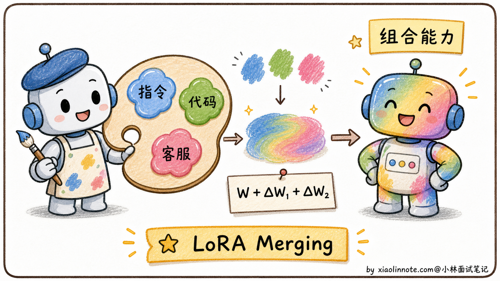
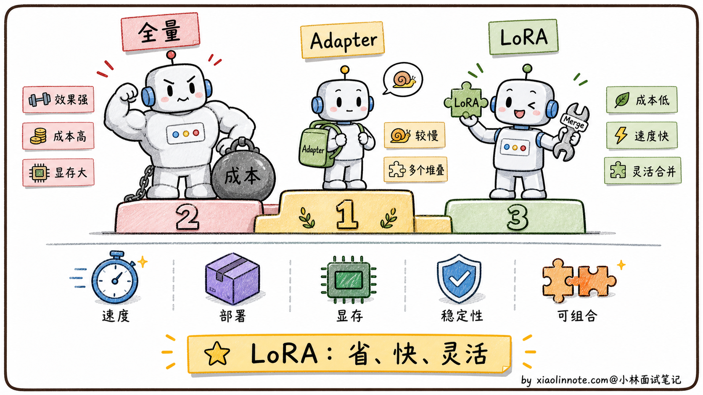

本篇目录
9. 请讲一下 LoRA 技术，除了减少参数量，它还有哪些优点？
👔面试官：来讲一下 LoRA 技术，除了减少参数量，它还有哪些优点？
🙋♂️我：LoRA 主要就是减少参数量，让显存占用降下来，普通 GPU 也能微调大模型。
👔面试官：……「除了减少参数量」是题目里写明白了的限定条件，你又把这个答了一遍。我问的是「除了这个还有什么」，你能再说几条吗？
🙋♂️我：呃……训练快一点？
👔面试官：「快一点」太笼统。LoRA 在「推理速度」「部署灵活性」「灾难性遗忘」「训练稳定性」「权重组合」这五个维度上都有 Adapter 这种早期方案做不到的优点。这些点你能讲清楚吗？
🙋♂️我：呃……我没仔细想过这么多优点。
👔面试官：典型的「会用但没深入想过」。LoRA 之所以能在 2023 年之后成为微调的事实标准、把 Adapter 等同期方案完全淘汰，正是因为这些容易被忽略的优点叠加起来。回去搞清楚再来。
这几个问题问完，LoRA 才显出真容貌，「省参数」只是它最浅的那一层。推理零开销、多任务可插拔、训练显存大降、组合性强，这些被人忽略的优点串起来，才是它在工业界真正流行的理由。
💡 简要回答
LoRA 我在项目里用过，省参数这个优点大家都知道，但它还有几个很实用的好处。
- 第一个是推理零开销，训练完之后，LoRA 的 A、B 两个小矩阵可以直接合并回原始权重，推理阶段完全不需要带额外模块，速度和原始模型一样，这比 Adapter 方案有明显优势。
- 第二个是部署特别灵活，一个 7B 基础模型才 14GB，每套 LoRA 只有几十 MB，可以同时维护客服、代码、翻译几套 LoRA，按请求类型热切换，不需要为每个场景各跑一个完整模型。
- 第三个是灾难性遗忘风险更低，因为原始权重全程冻结，只有旁路的小矩阵在学习，相当于在原来知识旁边打补丁，通用能力通常更容易保住。
- 第四个是训练更稳定，可训练参数少，梯度空间小，对学习率这类超参不那么敏感，调参成本低。
- 还有一个进阶的点是多个 LoRA 可以加权混合，比如把指令遵循 LoRA 和代码 LoRA 合并一下，不用重新训练就能融合两种能力。
📝 详细解析
背景：微调大模型，代价有多大？
要理解 LoRA 的价值，先得搞清楚它在解决什么问题。
大模型预训练完之后，通用能力很强，但要让它专注做某类任务（比如医疗问答、代码生成），通常需要在特定数据上做微调。最直接的方式是全量微调（Full Fine-tuning）：把模型所有参数都拿出来，在新数据上继续训练，更新全部权重。
但全量微调的显存需求极高。以一个 7B 参数的模型为例，用 FP16 精度存储权重本身就要约 14GB；训练时还需要存梯度（14GB），以及 Adam 优化器的两个状态，一阶矩和二阶矩（合计约 56GB）。光这几项加起来，一次训练迭代就需要 80GB+ 的显存。
普通研究者或开发者手里顶多是一张 24GB 的消费级 GPU（比如 RTX 4090），全量微调一个 7B 模型根本跑不动。如果是 70B 模型，需要的显存更是以百 GB 计，别说个人，普通公司都很难负担。
这就催生了一类新方法，参数高效微调（PEFT，Parameter-Efficient Fine-Tuning），核心思路是：不更新全部参数，只训练一小部分，同时尽量不损失微调效果。LoRA 是其中最成功的方案之一。
LoRA 的核心思路：不改原模型，在旁边打补丁
LoRA（Low-Rank Adaptation）的思路很直觉：不动原始权重 W，在旁边加两个小矩阵 A 和 B，训练时只更新 A 和 B，W 全程冻结。
前向传播的公式变成：
# W 是原始权重（冻结，不更新）
# A 和 B 是两个小矩阵（可训练，随机初始化）
# α 是缩放因子（超参，控制 LoRA 更新的强度）
output = x @ (W + α * (B @ A))
# ↑ 这部分就是 LoRA 的「旁路」，只有这里在学习A 和 B 两个小矩阵组成一个「旁路分支」，负责学习微调任务需要的增量知识；原始权重 W 保存着预训练学到的通用知识，一字不改。
可以用「给书批注」来类比：全量微调是把书重新印一遍、改掉原文内容；LoRA 是在书的空白处贴便利贴，原书一个字都不动，便利贴上写的是修正和补充。读书的时候，原文和便利贴的内容都能看到，效果叠加在一起。这种「在旁边打补丁」的设计，是 LoRA 后续很多优点的根源。

「低秩分解」到底是什么意思？
LoRA 里最让初学者困惑的词是「低秩分解」。拆开来理解：
先说「秩」（rank）是什么。 矩阵的秩代表矩阵里「真正独立的信息维度」。一个 4096×4096 的大矩阵，秩最高可以是 4096，意味着里面有 4096 个完全独立的信息方向。但研究发现，微调时权重的「更新量」（即 ΔW = W微调后 - W原始）往往具有内在低秩性，这些变化只在很低维的子空间里发生，秩通常只有 8-16，其余几千个维度几乎没有有效信息。
用一个类比来感受：一张 4K 照片有几百万像素，但它的信息量可以用几十个主要「颜色分量」来近似表达，这正是 JPEG 压缩的工作原理，把高维数据投影到低维空间，保留最主要的信息，丢掉噪声。低秩分解的思路与此类似。
再说「分解」是什么操作。 既然「有效信息只在 r 维子空间」，我们就不需要存储整个 d×d 的大矩阵来表示更新量，而是用两个小矩阵的乘积来近似它：
- 矩阵 A：形状 d×r（把输入从 d 维压缩到 r 维）
- 矩阵 B：形状 r×d（把 r 维还原回 d 维）
- 两者乘积 B·A 形状是 d×d，和原始更新矩阵同维，但参数量大幅减少
这里的 r 就叫做秩（rank），是 LoRA 最重要的超参，通常设 8 或 16。r 越小，参数越少，但表达能力也越弱；r 越大，参数越多，但更接近全量微调效果。大多数任务 r=8 到 r=16 就够了。

参数量减少了多少？
来做一道具体的计算，有个直观感受：
- 原始更新矩阵（d=4096）：4096 × 4096 = 约 1677 万参数
- LoRA r=16：4096×16（矩阵 A）+ 16×4096（矩阵 B）= 约 13.1 万参数，减少了约 128 倍
放到整个 7B 模型上：全部可训练参数约 70 亿，用 LoRA 微调后只剩约 2000 万可训练参数，不到原来的 0.3%。显存需求从 80GB+ 直接降到了普通 GPU 可以接受的范围。
参数少只是第一步，LoRA 还带来了几个连锁的好处，理解了它「原始权重冻结 + 旁路小矩阵」的数学结构，这些优点都是自然推论出来的。
优点一：推理零开销，合并就消失
LoRA 最被低估的优点之一，是它的推理部分不产生任何额外延迟。
来看一下数学上是怎么回事。LoRA 的完整公式是这样的：
# LoRA 的核心公式
# W 是原始权重（冻结），A 和 B 是两个小矩阵（可训练）
# α 是缩放因子（超参，控制 LoRA 更新的强度）
# 前向计算时：
output = x @ (W + α * (B @ A))
# 但由于 W 是固定的，我们可以提前把 LoRA 更新合并进去：
W_merged = W + α * (B @ A) # 提前算好，只做一次
# 推理时，就和原始模型完全一样，没有额外计算
output = x @ W_merged训练完成之后，把 α * B·A 的结果加到 W 上，得到一个新的 W_merged，这个合并操作只需要做一次。推理时直接用 W_merged，和原始模型结构完全一样，不需要带着 A、B 两个额外矩阵。
这一点和另一种 PEFT（参数高效微调）方法，Adapter 形成了鲜明对比。Adapter 是在 Transformer 每层之间插入一个小型网络，推理时每次都要让激活值额外过一遍这个小网络，每层都有延迟叠加。在一个 32 层的模型里，每层多几毫秒，叠加起来就很可观了。LoRA 合并之后，推理阶段的计算图和原始模型完全相同，没有这个问题。
对延迟敏感的在线服务来说，这个特性非常重要。

优点二：模块化插拔，一个基底，多套能力
LoRA 带来了一种非常灵活的部署模式：一个基础模型 + 多套 LoRA 权重，按需加载。
可以用手机来类比：基础模型就像手机的操作系统（14GB），每套 LoRA 就像一个 APP（10-100MB）。你不需要为「打电话」和「拍照」分别装两部手机，切换功能只需要切换 APP。
这种模式在实际工程里是怎么运作的？基础模型只加载一次，常驻显存；不同场景的 LoRA 像插件一样按需挂载，需要哪个能力就挂哪个，切换时不用重新加载几十 GB 的模型主体，只需要换掉那几十 MB 的旁路矩阵：
from peft import PeftModel
from transformers import AutoModelForCausalLM
# 基础模型只加载一次，常驻显存（约 14GB）
base_model = AutoModelForCausalLM.from_pretrained("Qwen2.5-7B")
# 场景一：用户发来客服请求，挂载客服 LoRA（只有几十 MB）
lora_customer_service = PeftModel.from_pretrained(
base_model,
"path/to/customer_service_lora"
)
# 场景二：用户发来代码问题，换成代码 LoRA
# 基础模型不用重新加载，只替换旁路矩阵
lora_coding = PeftModel.from_pretrained(
base_model,
"path/to/coding_lora"
)可以看到，base_model 始终只有一份，两套 LoRA 都挂在同一个基础模型上，显存里不需要同时跑两个完整的 7B 模型。一个 7B 模型大约占 14GB 显存，而每套 LoRA 只有几十 MB。对于需要服务多个不同场景的平台，这个方案比「每个场景部署一个独立微调模型」要经济得多，存储和显存占用都大大降低。在 AI 应用平台里，这种「一基础模型 + 多 LoRA」的架构已经非常普遍。

优点三：不丢通用能力，白板旁边贴便利贴
全量微调有一个著名的问题叫灾难性遗忘（Catastrophic Forgetting）。
这个问题是这样产生的：全量微调时，所有参数都在被更新，模型为了在新任务上表现好，会把原来的权重改掉。如果新任务的训练数据分布比较窄（比如只有医疗问答），模型就会逐渐「忘掉」它在预训练时学到的通用能力，比如代码能力、逻辑推理能力。你微调完一个专门回答医疗问题的模型，发现它写代码的能力大幅下降了，这就是灾难性遗忘。
LoRA 对这个问题的风险要低得多，原因直接体现在它的设计上：原始权重 W 全程冻结，训练过程中一个参数都不动，所有的学习都发生在旁边的 A、B 小矩阵里。
用这个类比来理解：全量微调是在白板上擦掉原来的内容再重写，LoRA 是在白板旁边贴便利贴，原来白板上的内容完好无损，便利贴上写的是新补充的知识。推理时，白板内容（原始知识）和便利贴内容（新知识）都能用到。
这也是为什么 LoRA 微调的模型通常能在新任务上学好，同时尽量保留预训练的通用能力。不过它不是绝对不会遗忘，如果数据很偏、rank 设得很大、学习率过高，或者把 LoRA 合并后继续训练，通用能力仍然可能下降，所以微调后还是要跑通用能力回归测试。
优点四：训练更稳定，超参不敏感
全量微调对超参很敏感，尤其是学习率。学习率稍微大一点，模型就会「跑飞」，训练不稳定甚至崩溃；学习率太小，收敛又非常慢。这是因为要同步调整几十亿个参数，梯度空间极其复杂。
LoRA 只训练 A 和 B 两个小矩阵，可训练参数量减少了 100 倍以上，梯度的搜索空间随之大幅缩小。搜索空间小，意味着优化器更容易找到好的方向，训练过程更平稳，对学习率等超参的敏感性也更低。
实践中，LoRA 最关键的超参只有一个：rank r（低秩维度）。r=8 到 r=64 在很多任务上都能得到不错的结果，不需要反复调参。相比之下，全量微调通常需要大量实验找到合适的学习率和调度策略。对资源有限的团队来说，「调参成本低」意味着更少的实验开销，这也是一个很实际的优点。
优点五（进阶）：LoRA 权重可以加权混合
这是一个比较进阶、但在面试里能让你出彩的点：多个 LoRA 权重可以加权混合，实现能力融合，而不需要重新训练。
数学上，合并两个 LoRA 非常简单。假设有一个指令遵循 LoRA（A₁, B₁）和一个代码生成 LoRA（A₂, B₂），同时使用时：
W' = W + α₁ * (B₁ · A₁) + α₂ * (B₂ · A₂)调整 α₁ 和 α₂ 的比例，就可以调整两种能力的「配比」。在代码里，PEFT 库支持同时加载多个 LoRA：
from peft import PeftModel
# 加载第一个 LoRA（指令遵循能力）
model = PeftModel.from_pretrained(base_model, "instruction_lora")
# 再加载第二个 LoRA（代码生成能力）
model.load_adapter("coding_lora", adapter_name="coding")
# 同时激活两个 LoRA，两套权重叠加生效
model.set_adapter(["default", "coding"])这种技术被称为 LoRA Merging，是 Model Merging（模型融合）领域的重要方向。它的实际意义是：如果你分别微调了「擅长写代码的 LoRA」和「擅长遵循指令的 LoRA」，可以直接混合两者，得到「擅长写代码且遵循指令」的效果，不用专门为这个组合再收集数据、重新训练，大大节省了开发成本。

总结对比：LoRA vs 全量微调 vs Adapter
| 维度 | 全量微调 | Adapter | LoRA |
|---|---|---|---|
| 可训练参数量 | 全部（100%） | 少量额外参数（~1%） | 少量旁路参数（~0.1%-1%） |
| 推理额外开销 | 无 | 有（每层额外网络） | 无（可合并进 W） |
| 灾难性遗忘风险 | 高 | 低 | 低 |
| 部署灵活性 | 低（每任务一个全量模型） | 中 | 高（一个基底 + 多套 LoRA） |
| 训练稳定性 | 较差（超参敏感） | 较好 | 好（超参不敏感） |
| 权重可组合性 | 不支持 | 不支持 | 支持（LoRA Merging） |
| 效果上限 | 最高 | 中等 | 接近全量微调 |
从这张表里可以看到，LoRA 在「推理开销」「灵活性」「稳定性」「可组合性」上全面优于 Adapter，在「效果」上与全量微调接近，「资源需求」上远低于全量微调。这也是为什么 LoRA 已经成为 PEFT 方法里的绝对主流，从个人开发者到大型团队，都会优先选它作为微调方案。

🎯 面试总结
回到开头那段对话，问到「LoRA 除了减少参数量还有哪些优点」，最关键的是要跳出「省参数」这一个点，把 LoRA 在多个维度上的优势都讲出来。
最容易被低估的是推理零开销。训练完之后 LoRA 的 A、B 两个小矩阵可以直接合并回原始权重，推理时和原始模型完全一样，没有任何延迟。这一点和 Adapter 形成鲜明对比，Adapter 在推理时每层都要过一个额外的小网络，长模型上累积起来延迟可观。
接下来讲部署灵活性。一个 7B 基础模型才 14GB，每套 LoRA 才几十 MB，可以同时维护几套 LoRA（客服、代码、翻译）按请求类型热切换。这种「一个基底 + 多套 LoRA」的部署模式是工业界的现实做法，和「每个任务部署一个全量模型」对比成本能省一个数量级。
然后是灾难性遗忘风险更低。原始权重全程冻结，所有学习都发生在旁路的小矩阵里，相当于在原本的知识旁边贴便利贴，通用能力更容易保住。这是 LoRA 比全量微调最大的稳定性优势之一，但不是免测金牌，微调后仍然要做回归评测。
还有两个进阶优点可以提：训练稳定性（可训练参数少，梯度空间小，对学习率不敏感，调参成本低）和 LoRA 权重的可组合性（不同任务的 LoRA 可以加权混合，不用重新训练就能融合多种能力，业内叫 LoRA Merging）。
最关键的一句话：LoRA 之所以能成为 PEFT 的事实标准，不是因为单一维度的优势，是「推理零开销 + 部署灵活 + 不遗忘 + 训练稳 + 可组合」这五个优点的叠加，恰好把 Adapter 等早期方案完全比下去了。能讲到这一层，面试官就知道你不是会背一两个优点的新人，是真正理解 LoRA 工程价值的人。
对了，大模型面试题会在「公众号@小林面试笔记题」持续更新，林友们赶紧关注起来，别错过最新干货哦！